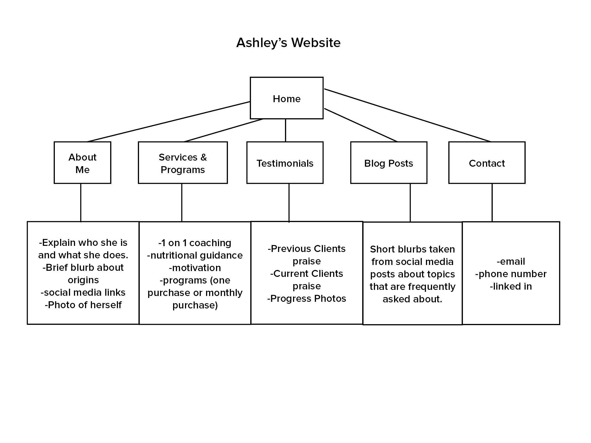
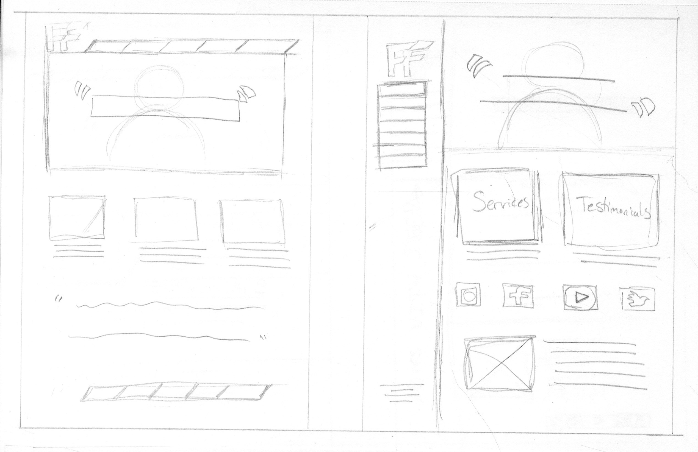
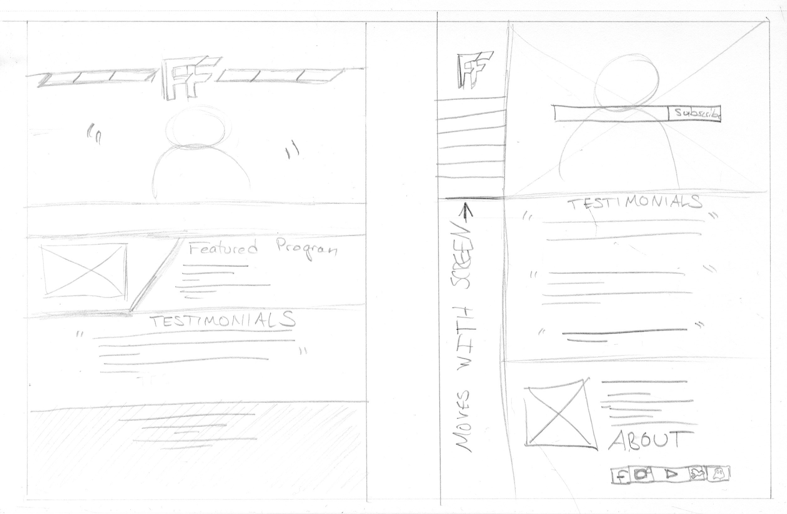
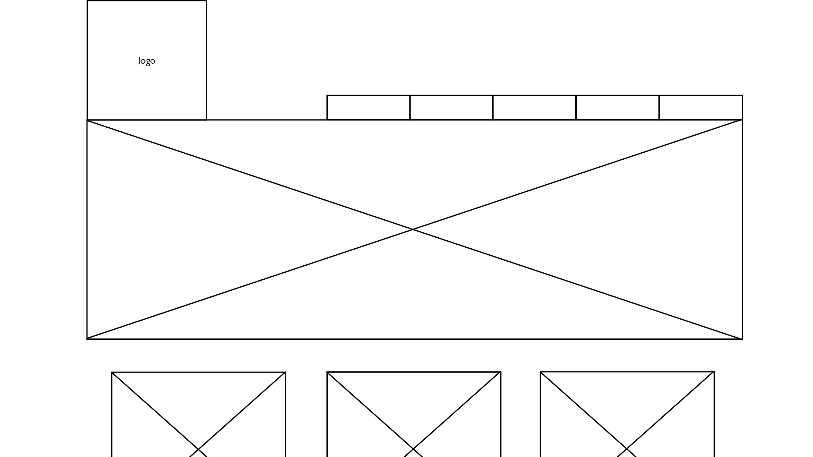
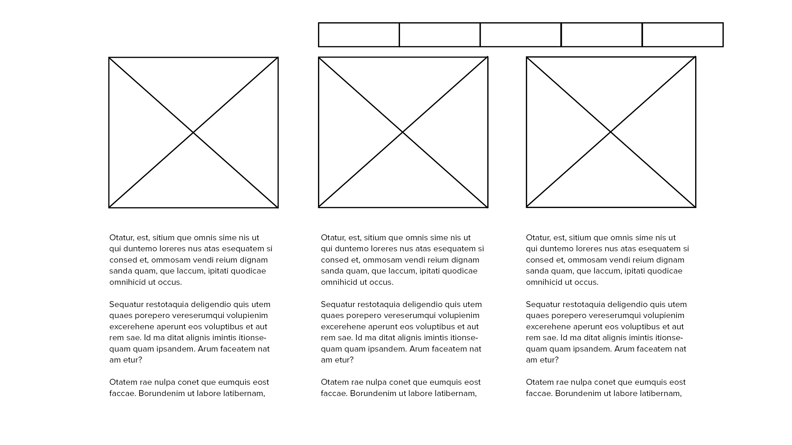
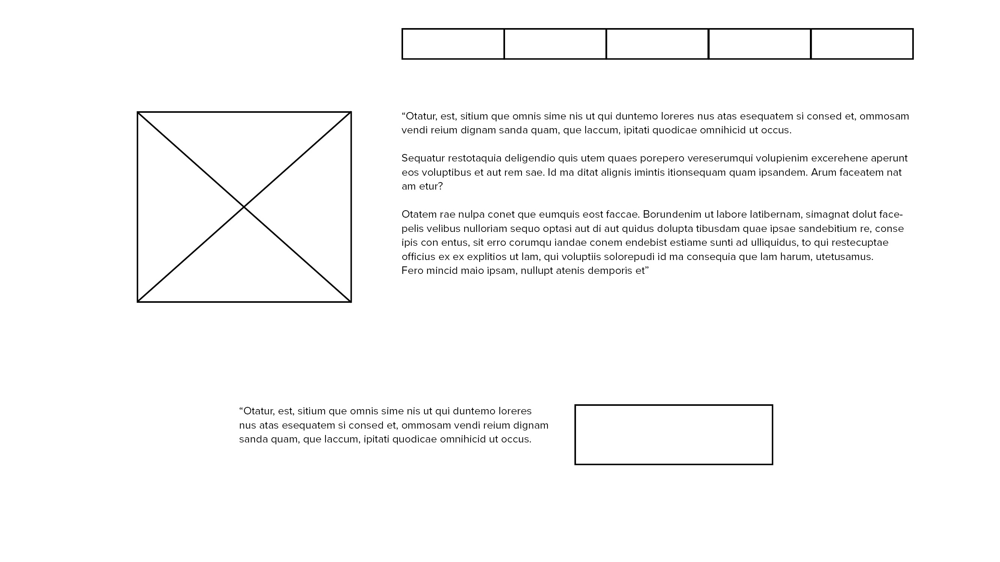
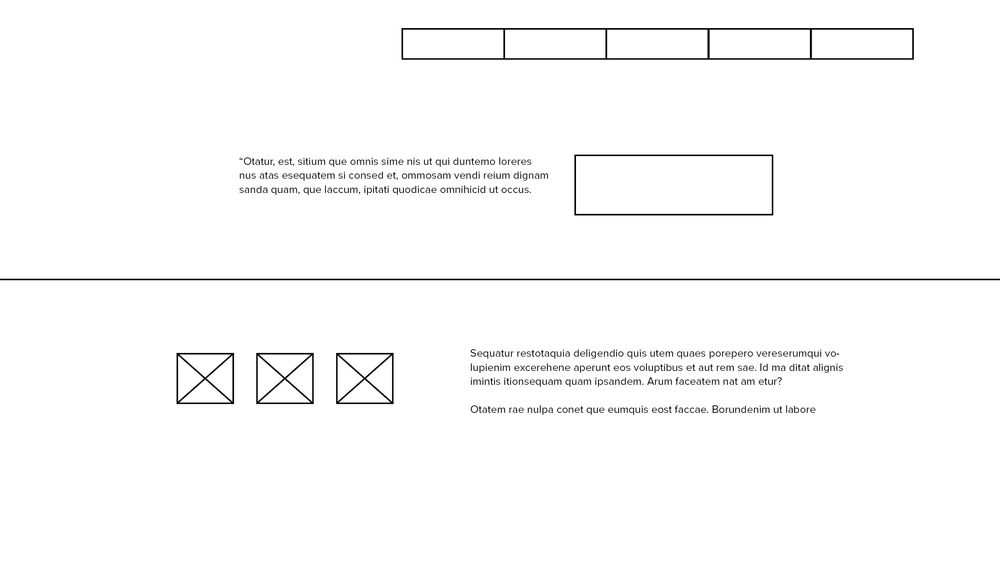
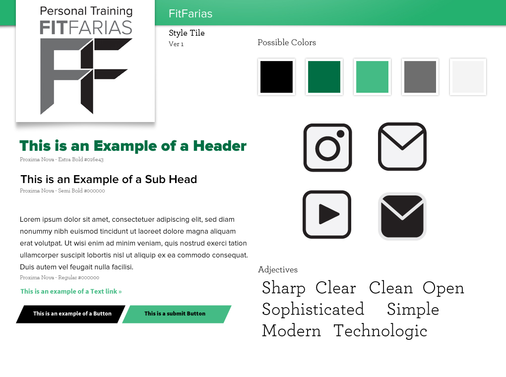

Brenda's Process Page
Ashley Farias' Website
Client Needs
She is in need of a website to promote her career as a personal trainer. Her website needs to show the services she offers as a trainer, a page to show past clients' testimonials, and links to her social media pages.
Ashley specified that she wants a responsive design for her website. It's important that her site is viewable on multiple devices. She wants to emphasize the variety of services she offers. Her services include 1 on 1 coaching, consultations, 4 week training programs, 8 week training programs, and/or renewable monthly training programs. Her clients can be any age. She has trained a variety of ages ranging from 18 years olds and 50 year olds. Other than weightloss or weight-gain programs, she wants to show that she can provide nutritional and dietary advice for her clients, as well as moral support and motivation.
We can work on creating a form for potential clients to fill out or we can just provide a link to her email for clients to contact her. It's possible to create a form, then leave an email link in her contact info for professional advice from aspiring trainers. She is open to business partnerships and sponsorships, so we may include a link that allows the viewer to email her seperately for business inquiries.
The entire website should follow the theme of her logo she has on her business cards. These include black and green tones, so we may have to make some minor adjustments and tweaks considering that white text on black backgrounds can be hard on the viewers eyes. It's also not as inviting and welcoming, thus is could scare or intimidate potential clients. She might need the social media logos to be specifically designed for her website considering she wants to keep a specific color scheme. she specifically pointed out that she would like a small "about me" blurb on her front page, but she insists there needs to be a page dedicated to introducing herself.She specified that she would like to see her logo in motion for the home/intro page. A photo of herself would be useful as well.
Meetings
Related Websites
-
Layne Norton's Website
- He has photos that you can click to learn more about his past clients.
- There's a warning that tells clients to check the FAQ page before signing up for his services.
- There's a concise list of the services offered with brief descriptions of the services.
- He has his credentials listed.
- You can download his resume.
- He has a photo gallery dedicated to his official appearances at events and contests that his clients comptete in.
- Customized Social Media Logos. Navigation expanded at the bottom of the page.
-
Matty Fusaro's Website
- About Us blurb at the bottom of the main page.
- There's a small section that shows the latest blog post.
- Learn More button on top of his opening image.
- You can purchase gift cards to his services online.
-
Raise The Bar's Website
- Programming services listed with price and time length underneath the clickable photo.
- Notifies the audience that monthly purchases are available.
- Opening image focuses on apparel line.
- Bottom of page lists the payment methods that are accepted.
-
3D Muscle Journey's Website
- Fixed Sidebar navigation.
- Notifies audience that they are drug-free and natural fitness professionals.
- Represents their About Us page as their history.
- Takes a step by step approach to explain the serices they offer in their programs.
- The link to their apparel leads to another website. Signup for Newsletter in Nav Bar.
-
Nika's Website
- This homepage has a small z-index but adds a nice touch.
- She has a chat bubble that you can talk to her through.
- Option to look at specific products and programs she sells.
- Her blog posts have a limited width size that provides nice white space.
-
Juggernaut Training Website
- Grid Like webstyle is interesting but the images are poor quality.
- Navigation menu is condensed into a small quare with lines inside. Extends to a beautiful large and clean menu.
- Option to search their website.
- Grids have specific colored bars to label the type of information it represents.
- Sold out programs are showed first and grayed out.
Architecture Diagram

Visual Design Sketches






StyleTile
